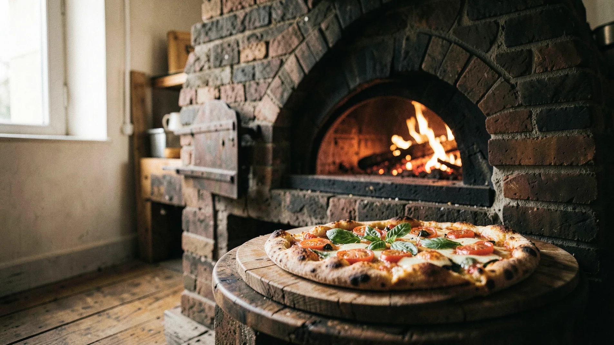
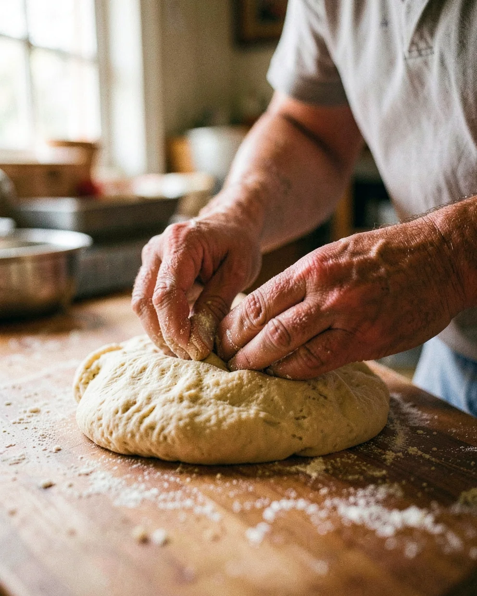

Benvenuti
Pizza alla Mano con Ingredienti DOP a Padova
Ingredienti DOP veneti e campani, forno a legna artigianale. Prenota il tuo tavolo nel cuore di Padova.
Prenota oraLa Vera Pizzeria
Cerchi una vera pizza napoletana a Padova e trovi solo cibo congelato o ingredienti di scarsa qualita? Vuoi mangiare una pizza fatta a mano, con forno a legna e ingredienti DOP, senza accontentarti di pizza veloce confezionata. Meriti autenticita, non surrogati.

Come Lavoriamo
Dalla Mattina al Servizio
Ogni mattina scegliamo gli ingredienti DOP piu freschi. Il forno a legna arriva a 485C: la pizza cuoce in 90 secondi, croccante fuori e morbida dentro. Così portiamo in tavola la vera tradizione napoletana a Padova.
- 01Usiamo Farina 00 Campana DOP con lievitazione naturale 48h
- 02Selezioniamo Pomodori San Marzano DOP e mozzarella di bufala
- 03Scaldiamo il forno a legna a mano per 2 ore
La Nostra Offerte
Pizze Classiche & Speciali
Scegli tra pizze fatte a mano con ingredienti selezionati. Ogni pizza è unica, creata con maestria e rispetto per la tradizione napoletana.
- Pizza Margherita DOP
- Pizza Marinara con aglio rosso
- Pizza Quattro Stagioni
- Pizza Bianca con rosemary
- Pizza Speciale Savonarola
Su prenotazione
Ingredienti freschi e stagionali
Vedi Menu CompletoPerché Scegliere Noi
La Nostra Garanzia
Ingredienti DOP
Tempo cottura
Anni di esperienza
Cosa Includiamo
La Tua Esperienza
-
01
Forno a Legna Autentico
Il cuore della nostra pizza: cottura a 485C per 90 secondi
-
02
Ingredienti DOP Campani
Pomodori San Marzano, mozzarella di bufala, farina 00
-
03
Prenotazione Online
Servizio ristorante con tavoli riservabili in anticipo
Prenota il Tuo Tavolo
Riserva ora per vivere l'esperienza della vera pizza alla mano. Disponibile tutti i giorni con tavoli in sala e terrazza.
Domande Frequenti
Hai Domande?
Posso prenotare per un gruppo?
Sì, accettiamo gruppi fino a 8 persone. Per gruppi più grandi contattaci direttamente.
Quali ingredienti usate?
Ingredienti DOP veneti e campani: pomodori San Marzano, mozzarella di bufala, farina 00 Campana.
Quanto tempo ci vuole per la pizza?
La pizza è pronta in circa 90 secondi dal forno a legna a 485C.
Siete adatti a bambini?
Sì, il nostro menù include anche opzioni per i più piccoli e sedia al tavolo.